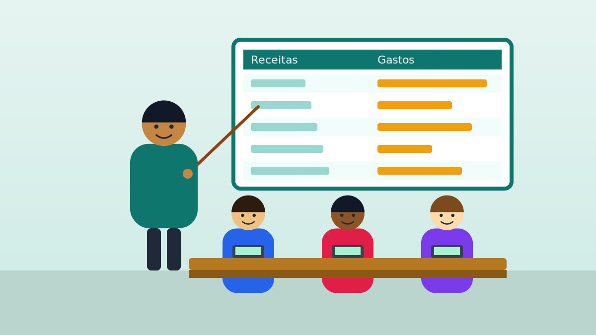

Jovens e primeiro emprego
Oficinas sobre salário, planejamento de gastos e uso responsável do crédito.
A EduCash é uma organização sem fins lucrativos que ensina orçamento, poupança e consumo consciente a quem mais precisa.

Fundada em 2018 por profissionais de finanças e educadores, a EduCash acredita que decisões financeiras conscientes mudam a trajetória de uma família.
Missão: democratizar o acesso à educação financeira por meio do trabalho voluntário.
Oficinas sobre salário, planejamento de gastos e uso responsável do crédito.
Atendimento para organizar dívidas, criar reserva de emergência e planejar o mês.
Noções de fluxo de caixa e separação entre contas pessoais e do negócio.